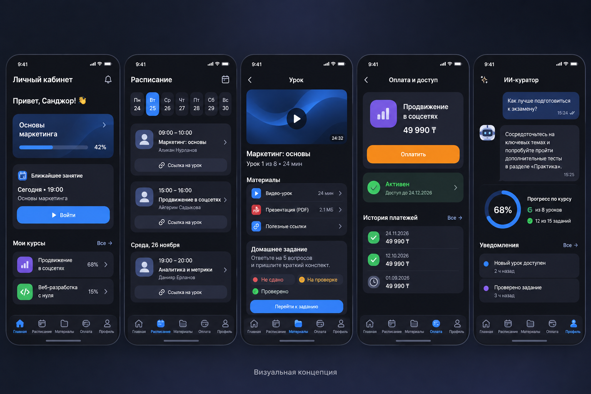

[Школа] ведёт учеников через несколько мест: расписание, материалы, домашние задания и оплату. Каждое место — точка, где ученик теряется и где уходит время у команды. [Цифра боли: сколько часов в месяц уходит на ручные действия или сколько заявок не доходит до оплаты — уточнить на созвоне.]
Предлагаем одно мини-приложение внутри Telegram, где ученики учатся, видят расписание и сдают задания, а школа ведёт процессы. Цель: [метрика школы, например, сократить ручную рассылку расписания с N часов до M] за [N недель].

Визуальная концепция. Это не скриншот готового продукта. Состав первой версии определяем вместе со школой; модули, помеченные «по согласованию», входят в стоимость только после решения.
| Этап | Срок | Что делаем | Результат |
|---|---|---|---|
| 1. Обсуждение задач | [1 нед] | Процессы, приоритеты, функции первой версии | Утверждённое ТЗ |
| 2. Прототип и дизайн | [1–2 нед] | Сценарии и согласование экранов | Прототип, одобренный школой |
| 3. Разработка | [N нед] | Реализация согласованных модулей | Работающая версия в Telegram |
| 4. Проверка и запуск | [1 нед] | Тестирование, исправления, передача | Запуск для учеников |
Вне объёма: [3–5 пунктов, например, создание контента курсов, интеграции с CRM].
| Foundation | Growth (рекомендуем) | Scale | |
|---|---|---|---|
| Объём | Ядро: каталог, расписание, материалы, ДЗ | Всё из первой версии + оплата и доступ | Growth + ИИ-куратор и аналитика |
| Сроки | [длиннее] | [стандарт] | [приоритетная очередь] |
| Поддержка | Базовая | [30 дней после запуска] | [3 месяца] |
| Стоимость | [X × 0,75] | [X] | [X × 1,4] |
Окупаемость: [одна фраза: например, если приложение добавит N оплат в месяц, вариант окупается за M месяцев].
[Отзыв или кейс — только реальный. Если его нет, блок удалить.]
Подтвердить вариант и задачи первой версии до [дата]. Стартовый созвон в течение 5 рабочих дней после подписания. Созвон для обсуждения: [дата и время].